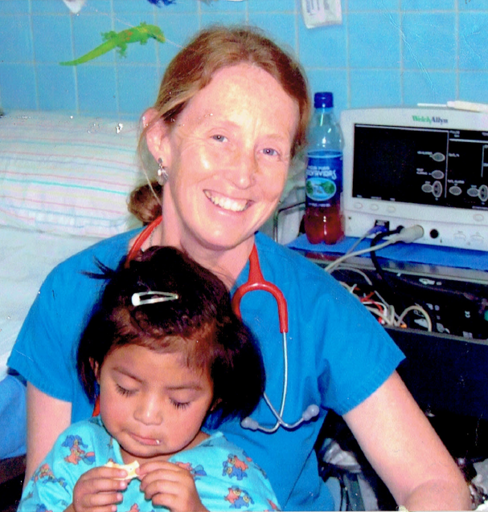
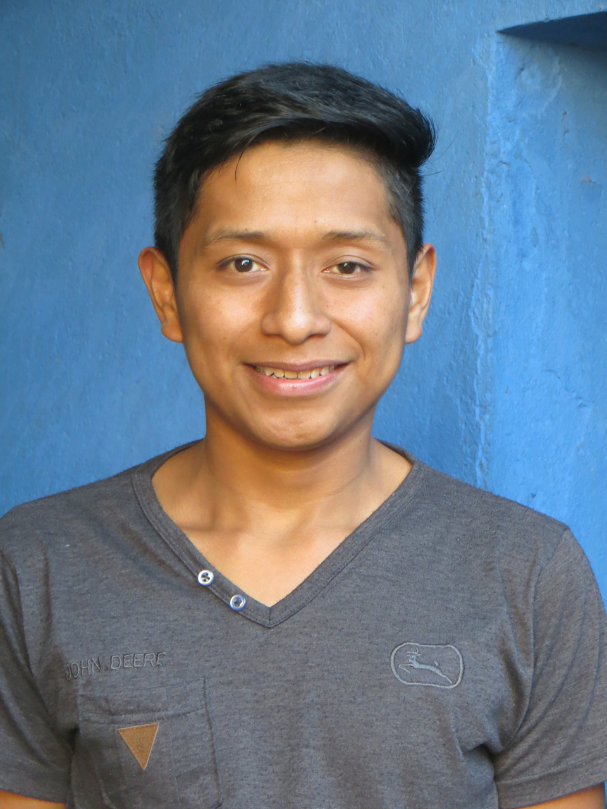

Maj StormoGipson Scholarship Fund
 Maj StormoGipson, Pediatrician and founding member of IEI, was dedicated to bringing medical care to rural populations of Latin America. In the years following her passing in 2013, her children, Kenna, Kate, and Luke have created the Maj StormoGipson Scholarship Fund (“Maj Fund”) to honor her spirit and continue her legacy of caring. The Maj Fund is available to local Guatemalans of rural Lago Atitlan through a partnership with Hospitalito in Santiago Atitlan, one of several locations where IEI works. By providing this educational opportunity, we can help empower local residents to become healthcare providers in their own community, while also enhancing the medical care provided at Hospitalito.
There is a critical and ongoing need for indigenous medical providers who can offer care in local Mayan languages, and who will stay long-term in their rural communities. However, they need help with the cost of their education. The Guatemalan government does not offer student loans and for most local families the cost of advanced education is out of reach.
Your contribution will help provide educational opportunities to those who have the least access and yet are the most in need.

Our first scholarship recipient is Pedro Abraham Mendoza Yaqui (pictured below with his grandmother). A young man from
Santiago Atitlan, Pedro’s dream was a career in health sciences. Without the support of the Maj Fund, he would not be
able to pursue his studies in Biological Chemistry to become Lab Director for Hospitalito. One day, the hope is that by
having its own Lab Director, Hospitalito will be able to
 maintain its own blood bank, which the local community desperately needs.
maintain its own blood bank, which the local community desperately needs.
Thanks to the scholarship fund, Pedro will be completing his first year of studies in December 2018! And in four more years he will become the first local resident to be Lab Director of Hospitalito.
Pedroʻs studies cost $4,500 per semester which includes tuition, fees, supplies, room and board. We need your help to make sure Pedro can continue next year. So far we are $1,600 toward our goal of $9,000 for the year. Even $25, $50, or $100 will help!
In May of 2018, during a medical service trip to Guatemala, Justin StormoGipson was able to sit down with Pedro for a short interview.
We are a 501(c)(3) non-profit and your donations are tax deductible to the full extent of the law. For donations by check please note our NEW MAILING ADDRESS:
International Eye Institute/attn: Maj Fund
310 S. 13th St.
Coeur d' Alene, ID 83814
You can also give a donation by using PayPal or a credit card.
PLEASE WRITE “MAJ FUND” in the comments section.